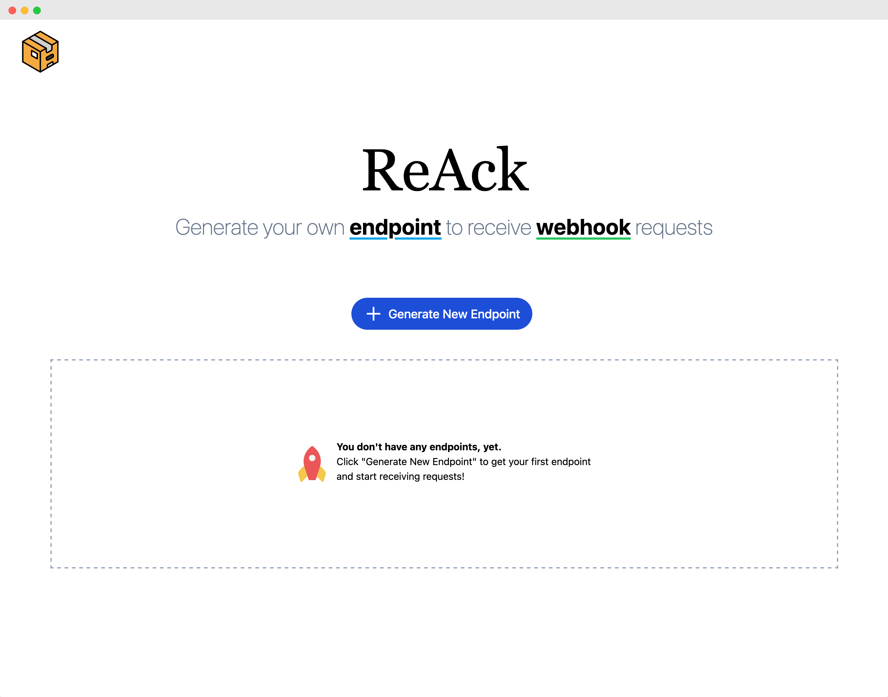

ReAck
ReAck is an application for collecting and inspecting HTTP webhook requests. Built with React, Node.js (Express framework), PostgreSQL, MongoDB, and Nginx.
Software Developer - Toronto, Canada
I am a strong independent problem solver who loves contributing to vibrant teams. I have worked with JavaScript, Node.js, React, WebRTC API, TypeScript, Go, PostgreSQL, MongoDB, Docker, Nginx, and AWS. I am particularly interested in system design and peer-to-peer networks.
I recently built Otter with a remote team of four spread across North America.

Otter is a cloud native framework that allows developers to easily integrate peer-to-peer video communication within web applications. By combining WebRTC and AWS serverless technology, Otter provides private 1-on-1 virtual meetings with a single API call.

ReAck is an application for collecting and inspecting HTTP webhook requests. Built with React, Node.js (Express framework), PostgreSQL, MongoDB, and Nginx.
Rate Your Dinner is an application for rating culinary experiences. Built with Pug templating engine, Node.js and PostgreSQL.